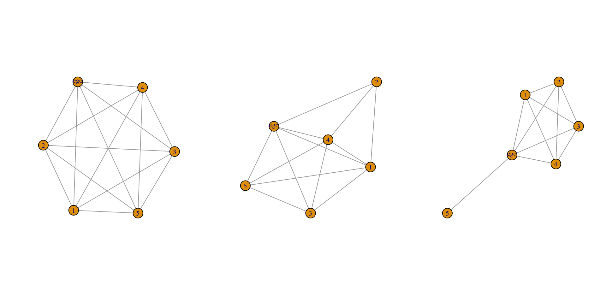

W4. Ego Network Data
Ego Network Data
Cover the basics of ego network data, utilizing the egor package
Construct and visualize ego networks
Working with Ego Network Data
Ego network data are based on a sample of individuals and are commonly used in the social sciences.
Each respondent (ego) reports on the people (alters) they are connected to, providing the local network around the focal respondent.
Ego network data offer only pieces of the whole network
Working with Ego Network Data
Ego network data can be structured in a number of ways but will generally have 4 kinds of information:
demographic, behavioral, etc. information on the egos
demographic, behavioral, etc. information on the named alters
information about the relationship between ego and alter
information about the relationships between the alters
Working with Ego Network Data
Work with ego network data from the GSS(General Social Survey)
a file with the ego attributes
a file with the alter(other) attributes
a file with the alter-alter ties
Load Dataset for Ego Attribute
First 10 rows of the ego data frame
CASEID AGE EDUC RACE SEX HAPPY NUMGIVEN
1 19850001 33 16 white male 2 6
2 19850002 49 19 white male 2 6
3 19850003 23 16 white female 2 5
4 19850004 26 20 white female 2 5
5 19850005 24 17 white female 2 5
6 19850006 45 17 white male 2 4
7 19850007 44 18 white female 2 6
8 19850008 56 12 white female 2 5
9 19850009 85 7 white female 2 2
10 19850010 65 12 white female 2 2Load Dataset for Ego Attribute
Load Dataset for Alter Attribute
Load Dataset for Alter Attribute
# each row corresponds to a different named alter
# Each alter is denoted by an ALTERID (CASEID : ALTERID = 1:N)
# KIN : 1(True) if ego is relatives with that alter
# respondent 1 (CASEID = 19850001) names 5 alters. The first alter (ALTERID = 1) is 32, has 18 years of education, and is not kin to ego.
alter_dat[1:10, c("CASEID", "ALTERID", "AGE", "EDUC", "RACE", "SEX", "KIN")] CASEID ALTERID AGE EDUC RACE SEX KIN
1 19850001 1 32 18 white male 0
2 19850001 2 29 16 white female 1
3 19850001 3 32 18 white male 0
4 19850001 4 35 16 white male 1
5 19850001 5 29 13 white female 0
6 19850002 1 42 12 white female 1
7 19850002 2 44 18 white male 0
8 19850002 3 45 16 white male 0
9 19850002 4 40 12 white female 0
10 19850002 5 50 18 white male 0Load Dataset for Alter-Alter Tie
Load Dataset for Alter-Alter Tie
- the ties between the named alters
CASEID ALTER1 ALTER2 WEIGHT
1 19850001 1 2 2
2 19850001 1 3 1
3 19850001 1 4 1
4 19850001 1 5 1
5 19850001 2 3 2
6 19850001 2 4 2
7 19850001 2 5 2
8 19850001 3 4 1
9 19850001 3 5 1
10 19850001 4 5 1Let’s make Ego Network
- transforming traditional survey data into something that has the structure of a network ü§Øü§Øü§Øü§Øü§Ø
- üçÄüçÄegorüçÄüçÄ package has made the task of constructing ego networks from survey data much easier
Let’s make Ego Network
- construct an egor object from our survey data
# `egor()` : input the data using three separate files.
egonetlist <- egor(alters = alter_dat, # alter attributes data frame
egos = ego_dat, # ego attributes data frame
aaties = alteralter_dat, # alter-alter tie data frame
alter_design = list(max = 5), # list of arguments to specify nomination information from survey
# list of variable names corresponding to key columns
ID.vars = list(ego = "CASEID", alter ="ALTERID",
source = "ALTER1", target = "ALTER2")
) Calculate Summary Statistics
- We will begin with density, showing the proportion of alter-alter ties that exist in each ego network
- By the way, What is the definition of density?ü§®
Calculate Summary Statistics
- a measure for overall level of connection among nodes in a network
- (m) = number of edges
- (n) = number of nodes
\[ Dentisy = \frac{2m}{n(n-1)} \]
Calculate Summary Statistics
Plotting Ego Networks
- go over how to plot the ego networks using packages like igraph
Plotting Ego Networks
- convert the egor object to igraph objects.
Plotting Ego Networks
Now, let’s take a look at the first three ego networks.
$`19850001`
IGRAPH 6c3fc0d UN-- 6 15 --
+ attr: .egoID (g/n), name (v/c), AGE (v/n), EDUC (v/n), RACE (v/c),
| SEX (v/c), RELIG (v/c), AGE_CATEGORICAL (v/c), EDUC_CATEGORICAL
| (v/c), TALKTO (v/n), SPOUSE (v/n), KIN (v/n), WEIGHT (e/n)
+ edges from 6c3fc0d (vertex names):
[1] 1--2 1--3 1--4 1--5 2--3 2--4 2--5 3--4 3--5 4--5
[11] 1--ego 2--ego 3--ego 4--ego 5--ego
$`19850002`
IGRAPH ce109e1 UN-- 6 13 --
+ attr: .egoID (g/n), name (v/c), AGE (v/n), EDUC (v/n), RACE (v/c),
| SEX (v/c), RELIG (v/c), AGE_CATEGORICAL (v/c), EDUC_CATEGORICAL
| (v/c), TALKTO (v/n), SPOUSE (v/n), KIN (v/n), WEIGHT (e/n)
+ edges from ce109e1 (vertex names):
[1] 1--2 1--3 1--4 1--5 2--4 3--4 3--5 4--5 1--ego 2--ego
[11] 3--ego 4--ego 5--ego
$`19850003`
IGRAPH 53bf4d5 UN-- 6 11 --
+ attr: .egoID (g/n), name (v/c), AGE (v/n), EDUC (v/n), RACE (v/c),
| SEX (v/c), RELIG (v/c), AGE_CATEGORICAL (v/c), EDUC_CATEGORICAL
| (v/c), TALKTO (v/n), SPOUSE (v/n), KIN (v/n), WEIGHT (e/n)
+ edges from 53bf4d5 (vertex names):
[1] 1--2 1--3 1--4 2--3 2--4 3--4 1--ego 2--ego 3--ego 4--ego
[11] 5--egoPlotting Ego Networks
let’s plot a couple of example networks, focusing on the first 3 ego networks.
Plotting Ego Networks
- Let’s color the nodes based on gender
- so we can get a sense of the level of gender homogeneity in these ego networks
# somewhat more difficult task than with a single network
# defind a function to set the color for each network
plotfunc_colorgender <- function(nets){
# Arguments:
# nets: ego network of interest
# extracting the attribute from the ego network:
cols <- vertex_attr(nets, "SEX")
# now we use an ifelse statement to set color,
# light sky blue if gender equals female, blue otherwise:
cols <- ifelse(cols == "female", "lightskyblue", "blue")
# plotting ego network with nodes colored based on gender:
plot(nets, vertex.color = cols)
}Plotting Ego Networks
- Now let’s run
plotfunc_colorgender()over the first three ego networks.

Triads
- help us study the small-scale pattern that explain why certain people connect with each other(how ties form in a network)
- The data are based on three relations collected on workers in a single organization
- Our main objective is what kind of rules of interaction do we see in our friendship and advice networks
- i.e. do we see the same behavioral rules being followed when examining advice compared to friendship?
Triadic Processes
- work primarily with the sna package [@sna], so let’s start by loading that package.
Triadic Processes
- download three datasets(1. friends 2. advice 3. attributes)
url1 <- "https://github.com/JeffreyAlanSmith/Integrated_Network_Science/raw/master/data/krackhardt_advice.csv"
url2 <- "https://github.com/JeffreyAlanSmith/Integrated_Network_Science/raw/master/data/krackhardt_attributes.csv"
url3 <- "https://github.com/JeffreyAlanSmith/Integrated_Network_Science/raw/master/data/krackhardt_friendship.csv"
advice_data_frame <- read.csv(file = url1)
attributes <- read.csv(file = url2)
friends_data_frame <- read.csv(file = url3)
# extract only Ture relationship
advice_edgelist <- advice_data_frame[advice_data_frame$advice_tie == 1, ]
friends_edgelist <- friends_data_frame[friends_data_frame$friendship_tie == 1, ]Triadic Processes
Let’s take a look at the dataset, one by one
Triadic Processes
Let’s take a look at the dataset, one by one
Triadic Processes
Let’s take a look at the dataset, one by one
Triadic Processes
- We now construct the network , as before, using the
network()function.
Triad Census
- The triad census captures the distribution of triads across 16 basic types, representing different patterns of interaction between the three nodes
- There are 16 different triad types:


Triad Census
- compare the triad counts across the two network relations, to see if the patterns differ for friendship compared to advice
Triad Census
And now for friendship :
Triad Census
Let’s make a table to make the comparisons easier.
Triad Census
Triad Census
- one striking difference : The advice network has a much higher proportion of 030T triads than the friendship network


Triad Census
- The underlying hierarchy in this advice relation thus runs: A to C to B, as A influences B and C, C influences only B and B influences no one
- Such a pattern of hierarchy does not emerge as clearly in the friendship network

Triad Census
the triads associated with transitive dominance relations are more likely to be present in the advice network than the friendship network

Note that we need to be a little careful in pushing that conclusion too far, as the networks have different levels of density that may be driving the differences we observe in the triad count

Done!
Please check KLMS for the assignment of this week
If you want to study in-depth knowledge for the ego network, diad, and triad network, please check this week [Option]